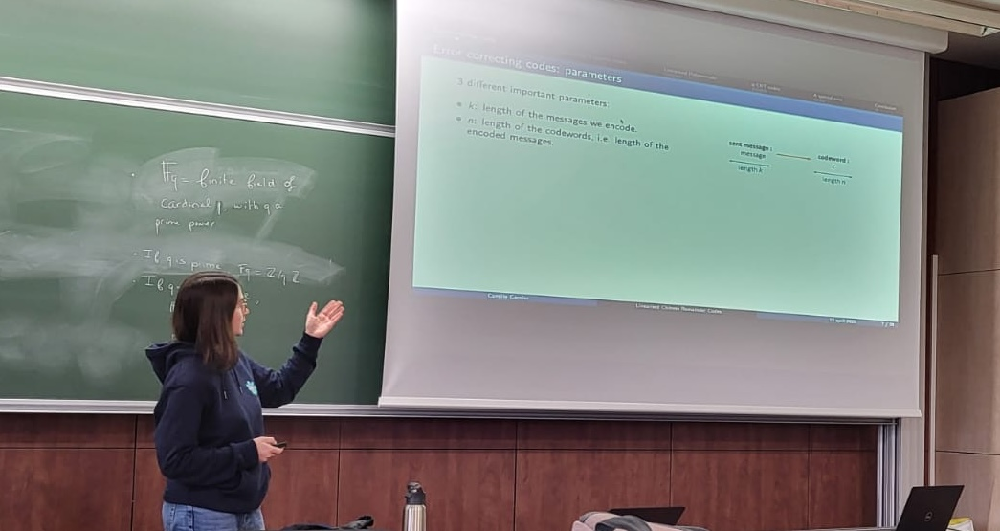

Talks
Seminars
Séminaire de
géométrie et algèbre effectives, Rennes, October 2025.
Linearized Polynomial Chinese remainder codes
PolSys
Seminar, Paris, September 2025.
Linearized Polynomial Chinese remainder codes
[slides]
Coding and Cryptography seminar, Technical University of Munich, Germany, May 2025.
Linearized Polynomial Chinese remainder codes
Canari
Seminar, Bordeaux, April 2025.
Linearized Polynomial Chinese remainder codes
Workshops and conferences
Journées C2 2026
2026, Calais,
April
2026.
Local codes in rank metric
[slides]
OpeRa
2026, Bordeaux,
February
2026.
Local codes in rank metric
[slides]
Effective Algebra days, Limoges, November 2025.
Locally testable codes in rank metric
Forum des Mathématiciennes, Bordeaux, November 2025.
Codes locaux en métrique rang
CROWD days, Rennes, October 2025.
Locally testable codes in rank metric
JNCF2025, Marseille, March 2025.
Linearized Polynomial Chinese remainder codes [slides]
Phd Seminars
Séminaire
Pampers, Rennes, December 2025.
Codes locaux en métrique rang
Phd Seminar, Limoges, September 2025.
Locally testable codes in rank metric
Séminaire
Lambda, Bordeaux, April 2025.
Codes Restes Chinois et Polynômes linéarisés
Phd Seminar, Limoges, April 2025.
Linearized Polynomial Chinese remainder codes
[slides]
